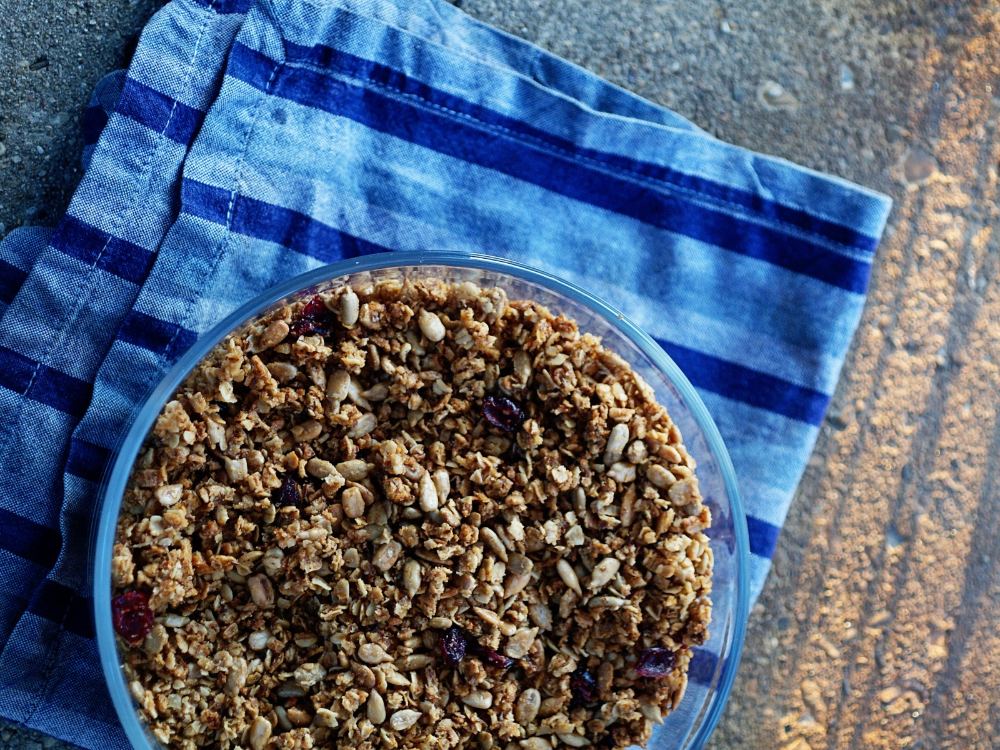

Maple and Dried Cranberry Granola

We are moving at the end of this month into the main floor of a beautiful old graystone mansion on one of Chicago’s tree-lined boulevards. It’s the kind of place that I would often enviously eye as I walked to my uninspiring,white-walled home - wishing for a bit of that old hardwood and sunshine. Four of us will be sharing the enormous space and saving on rent in the process.
As we begin to plan our move and start another cycle of security deposits, I have a renewed interest in finding inspiration in my stockpile of dry goods. While I didn’t have the proper combination of dried fruits and nuts on hand, Melissa Clark's recent olive oil granola inspired me to throw together my own version. I still stand by the Harrison House granola as my favorite, but I thought I would share this perfectly delicious, less expensive recipe with you. The lovely thing about granola is that you can add almost any type of nuts and dried fruits to the basic recipe. Feel free to modify.
Maple and Dried Cranberry Granola
Ingredients
3 C old-fashioned rolled oats
1 C roasted sunflower seeds, hulled and salted
¼C ground flax seed*
¾ C maple syrup
½ C extra virgin olive oil
½ C packed brown sugar
1 tsp kosher salt
½ tsp ground cinnamon
½ tsp ground cardamom
¾ C dried cranberries
Method
Preheat oven to 300F. Mix all ingredients in a large bowl, except the dried cranberries. Pour mixture onto a heavy baking sheet in an even layer and bake for 45 minutes, stirring every 10 minutes. Stir just enough to ensure the granola won’t burn, but not so much that all the delicious clumps of granola break apart (this is a matter of preference, of course).
When well-toasted and fragrant, remove from the oven and allow to cool. Mix in the dried cranberries and store in an air-tight container.
(*If you don't have ground flax seed stashed in your freezer like I do, omitting this ingredient will not dramatically change the final product.)